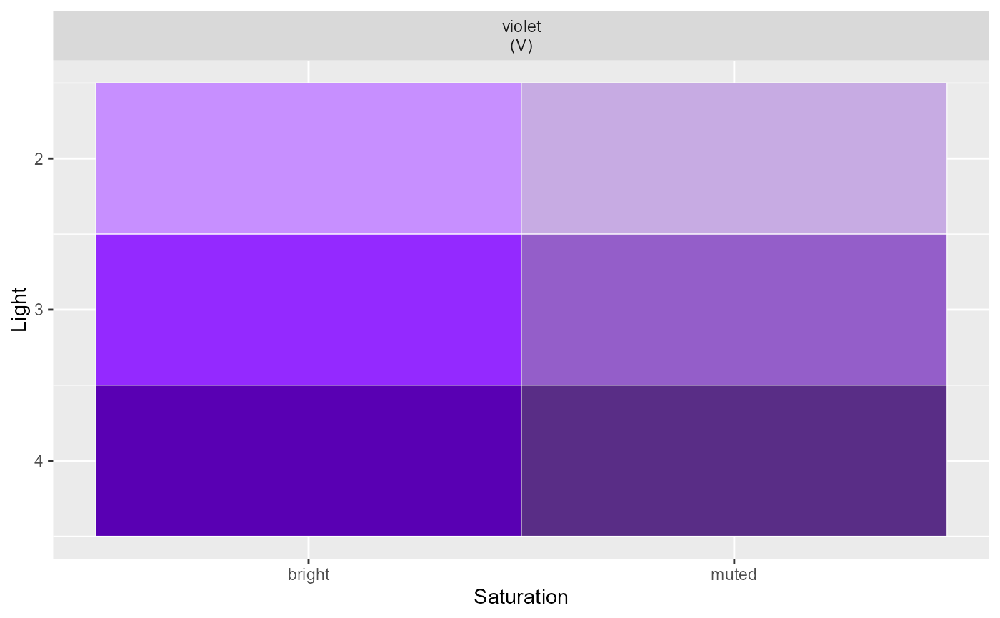

Generates a palette within 1 hue
sc_within(hue, light = c(2:5), sat = "", return = NULL)
sc_red(light = 2:5, sat = "", return = NULL)
sc_orange(light = 2:5, sat = "", return = NULL)
sc_yellow(light = 2:5, sat = "", return = NULL)
sc_green(light = 2:5, sat = "", return = NULL)
sc_teal(light = 2:5, sat = "", return = NULL)
sc_blue(light = 2:5, sat = "", return = NULL)
sc_violet(light = 2:5, sat = "", return = NULL)
sc_pink(light = 2:5, sat = "", return = NULL)
sc_grey(light = 2:5, sat = "", return = NULL)ex: "red", "blue", "violet"
the lightness of the color, ex: 1:5
the saturation of the color, ex: "bright", "muted", "dull" or "" (base)
defaults to returning hex codes but can also return a table or plot of the generated palette
Other palettes:
sc_across()
sc_within("violet", 1:3)
#> [1] "#E6D2F9" "#C79DF1" "#9444E4"
sc_within("violet", 1:5, "bright" , return = "table")
#> # A tibble: 5 × 2
#> color_name hex
#> <chr> <chr>
#> 1 brightviolet1 #E6CCFF
#> 2 brightviolet2 #C78FFF
#> 3 brightviolet3 #9429FF
#> 4 brightviolet4 #5900B3
#> 5 brightviolet5 #330066
sc_within("violet", 2:4, c("bright", "muted"), return = "plot")
